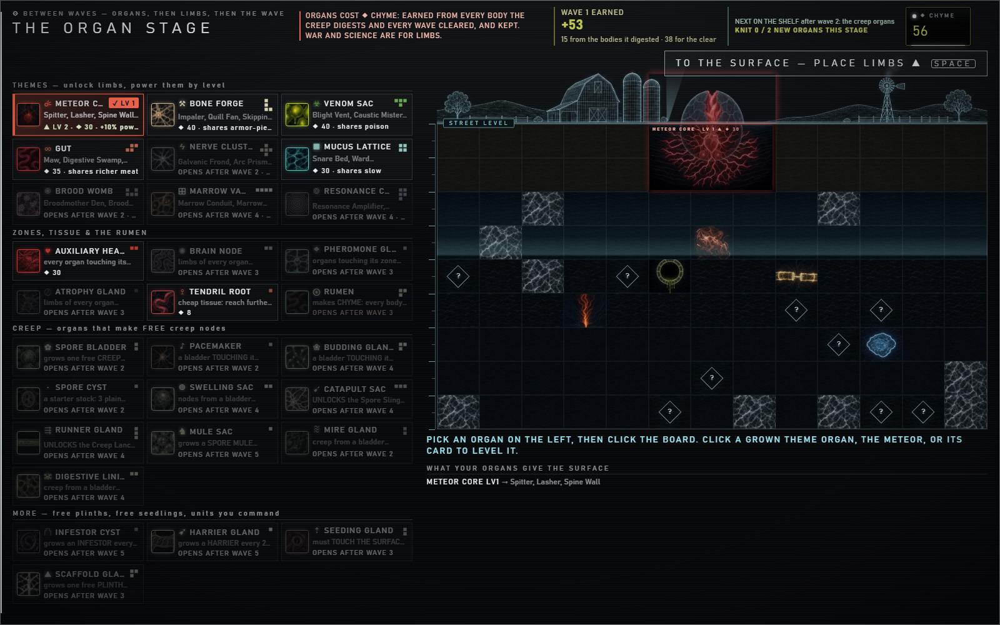
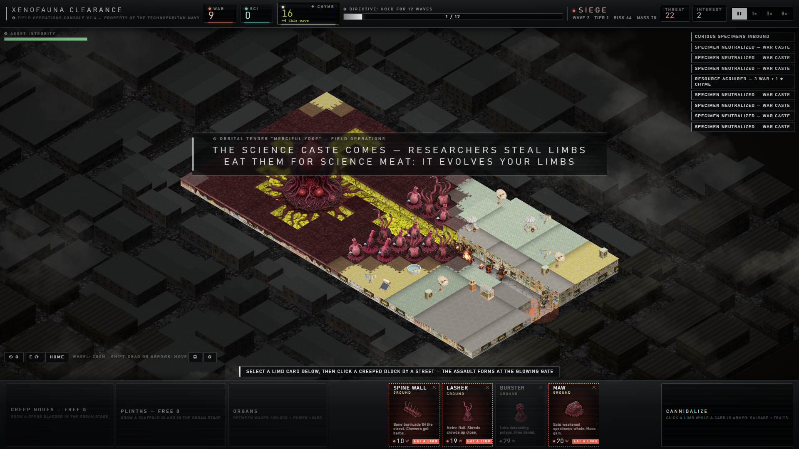
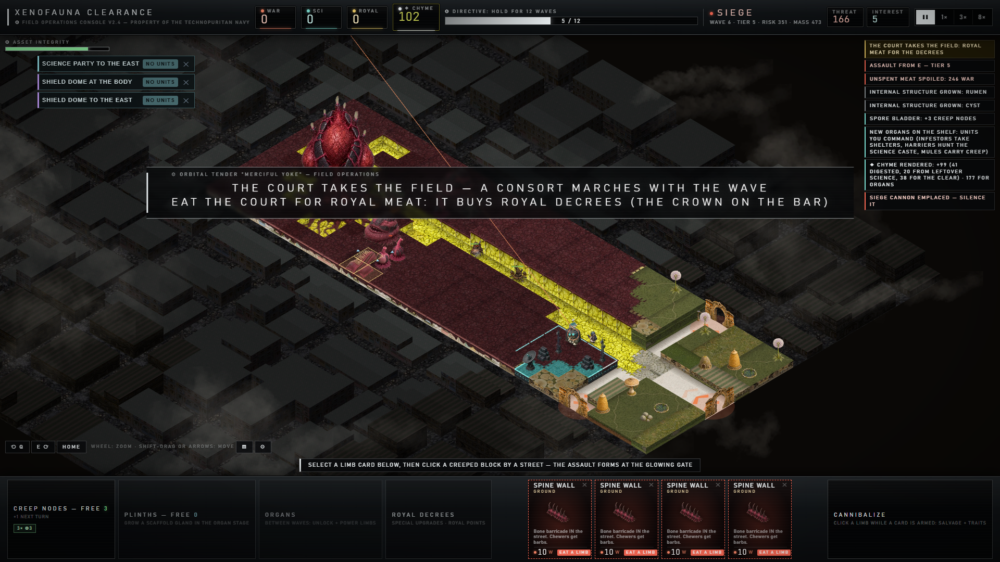
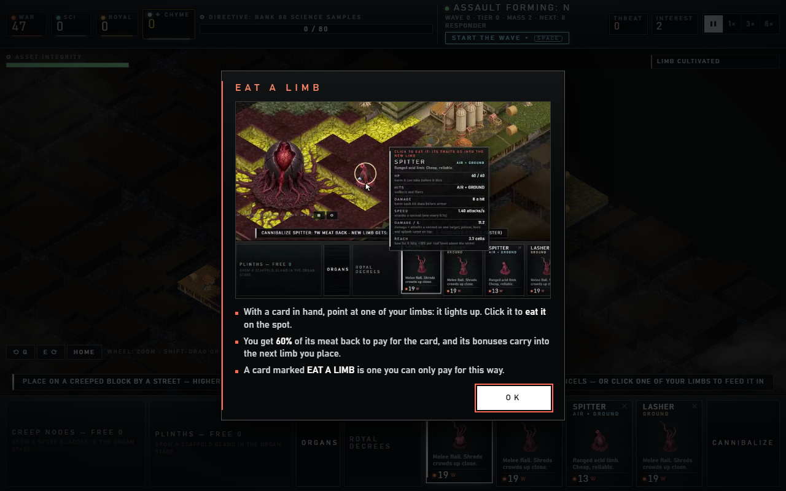
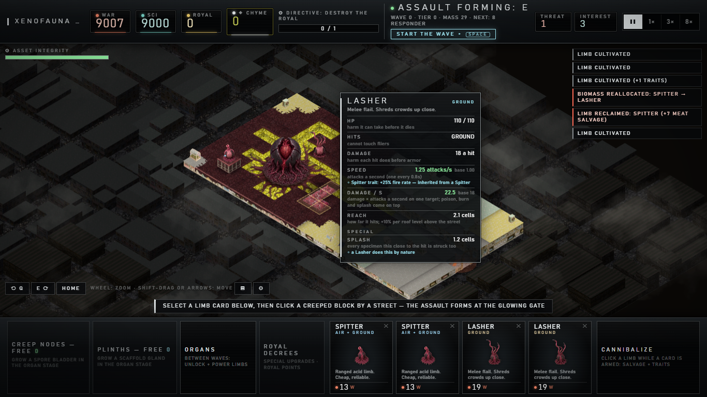
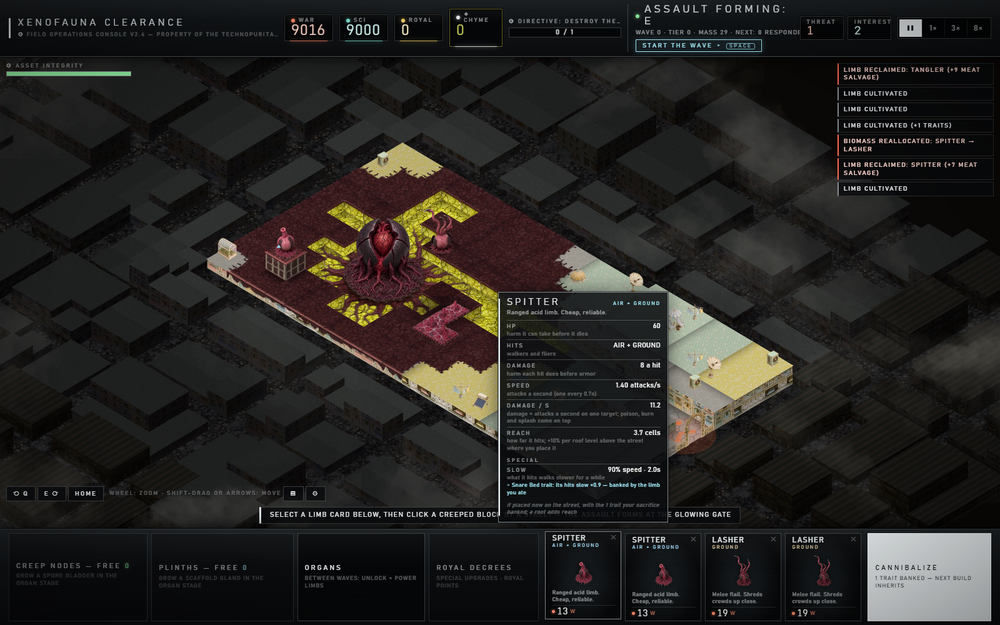

Broodfall: the loop, round two
Nov 23 2026. Everything here was played headless with the sound muted. All 960 tests pass, and it is all pushed to main.
- The run unfolds. Organs open in blocks, the science caste is announced when it arrives, and the royal court comes at wave 6.
- Round one can be lost, but it still teaches. If you build nothing, you lose in wave 1 or 2. Sensible play clears wave 1 with the core at 91% or more.
- Leftover science now turns into chyme instead of vanishing.
- New on screen: you pick the skirmish order, a first-time EAT A LIMB pop-up plays a film from the real game, and hovering any limb or card shows its stats explained.
- Sacrifice keeps power in check, but it is weakest exactly where the fantasy wants it strongest. See below.
Scoreboard: before and after
| Measured | Before | Now | Verdict |
|---|---|---|---|
| Test bot wins, hold 12 waves, one gate | 10/10 | 7/10 (lost in waves 6, 6, 8) | hard enough |
| Player who builds nothing | lost in wave 5 | lost in wave 1 (2 seeds) or 2 (8 seeds) | round one can be lost |
| Player who places at random | survived to waves 5-8 | lost in waves 2-4 | placement matters early |
| Sensible play, core after wave 1 | 94-100% | 91-100% | still a tutorial |
| My careless script player (no organs, first free cells) | won in wave 5, core untouched | lost in wave 4 | organs now matter |
| Skirmish length by order | 4 / 9 / 20 min, drawn at random | you pick: harvest ~10 min, royal ~10 min, hold ~16 min | fixed |
| Organs owned as waves start | all of them by wave 9 | 1, 3, 5 … 21: at most 2 new organs per stage | a choice every stage |
| Science lost per late wave | 115-214 | about 1 (becomes chyme, 3 for 1) | fixed |
| Royal meat per run | ~5, all in wave 8 | ~21, from wave 6 on | decrees matter |
What opens when
| When | What opens | How the player is told |
|---|---|---|
| Start | Gut, Bone Forge, Mucus Lattice, Venom Sac, Auxiliary Heart, Tendril Root | The organ stage's head row shows what's coming next |
| Wave 2 | The science caste arrives | Banner: "THE SCIENCE CASTE COMES…" |
| After wave 2 | Creep organs, Nerve Cluster, Brood Womb | "NEW ON THE SHELF", NEW badges, a feed line |
| After wave 3 | Brain Node, Pheromone Gland, Atrophy Gland, Rumen, Scaffold, Seeder | Same |
| After wave 4 | Marrow Vault, Resonance Chamber, the rest of the creep organs | Same |
| After wave 5 | Infestor, Harrier, Mule | Same |
| Wave 6 | The royal court: royal meat and Royal Decrees | Banner: "THE COURT TAKES THE FIELD…" |
Organs that aren't open yet stay on the shelf, dimmed, marked "OPENS AFTER WAVE N", so you can plan ahead. The campaign keeps its own unlocks, and mission 1 is still war-only.

The organ stage after wave 1, in the real page. I found and fixed one problem here myself: the new shelf news had squeezed the chyme note into a one-word column and pushed TO THE SURFACE off the window. It is checked at 1366, 1600 and 1920 wide.


Is the sacrifice mechanic managing power levels?
I had the test bot eat limbs four different ways, over whole 12-wave runs:
| How it eats | Wins | Limbs eaten | Meat lost to eating | Most bonuses on one limb | Best limb's share of all damage |
|---|---|---|---|---|---|
| Never | 4/6 | 0 | 0 | 1.8 | 18% |
| Now and then (every 4th build) | 5/6 | 20 | 100 | 2.2 | 25% |
| Greedy (every 2nd build) | 2/6 | 22 | 160 | 3.3 | 37% |
| Feed one monster limb | 3/6 | 28 | 210 | 3.7 | 46% |
On the new balance, 6 seeds each. The older balance, with 10 seeds, gave the same order: 8, 10, 9 and 8 wins.
What it shows:
- It doesn't run away. Even when everything is fed into one limb, that limb peaks below half the body's damage and carries at most about 4 bonuses. Each bonus adds +20-25%, so a fed limb gets stronger without breaking the game.
- It's a real choice. Eating now and then beats never eating. Eating too much loses, because every meal throws away 40% of a limb, costs you a body on the board, and raises interest, which draws the science caste.
- The weak spot: the monster-limb fantasy doesn't pay. Feeding one limb on purpose is the most "I'm a growing monster" way to play, and it's the worst strategy. A limb with 4 bonuses is only about 1.5-2x as strong, but it cost 4 whole limbs. Because the power is spread across +20% steps, sacrifice is a small tweak rather than a build. Decision 1 below.
The EAT A LIMB pop-up
It shows once, the first time you pick up a card while one of your limbs is standing and could be eaten. It never shows on your very first click, because there's nothing to eat yet. In mission 1 it waits until the coaching has introduced cannibalizing. The game pauses while it's open, and OK, Esc, Enter or a click closes it.
The film is cut from a real run: a Spitter standing, a Lasher card picked up, the pointer on the Spitter, the click eating it, and the Lasher placed carrying the Spitter's trait. It is 7.8 seconds, silent, and loops.

Hover stats with explanations
Hovering one of your limbs shows a card beside it with these rows, each with a short plain line saying what it means: HP, what it hits, damage, speed, damage per second, reach in cells, and its special powers. A boosted number is coloured, shows its base value, and lists where the boost comes from (an inherited trait, roof height, an organ level, an evolution, a crown). Hovering a card in your hand shows what that limb would be if you placed it now, including bonuses banked by a sacrifice. The click panel uses the same words.


Picking the order
Under SKIRMISH there is now an ORDER row: Hold, Kill the Royal, Bank Science, or Random. Each one has a line saying what it asks and roughly how long it runs. Your last choice is remembered.
Your decisions
For an engineer or an AI: DESIGN.md has the section "The world unfolds; round one is losable (Nov 23 2026)", and HANDOFF.md has the pop-up, the picker and the hover card. The measurements are in tools/measure (loop, directives, difficulty, sacrifice).